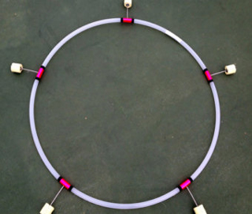
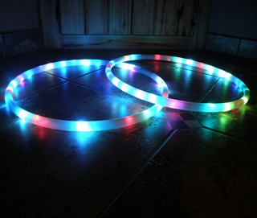
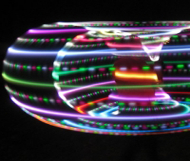

Hooping
Hooping generally refers to the artistic movement and dancing with one or multiple hoops.
Hooping combines tricks and technical moves with freestyle dancing.
In contrast to toy hula hoops, modern hoopers use heavier, larger hoops. These performers use all parts of the body to execute tricks, including the neck, shoulders, chest, arms, hands, hips, knees, and feet.
Practitioners of this art form often use hoops fastened with kevlar wicks to light on fire. It is also common to use a hoop filled with LED lights to create a stunning effect.
- 
- 
- 